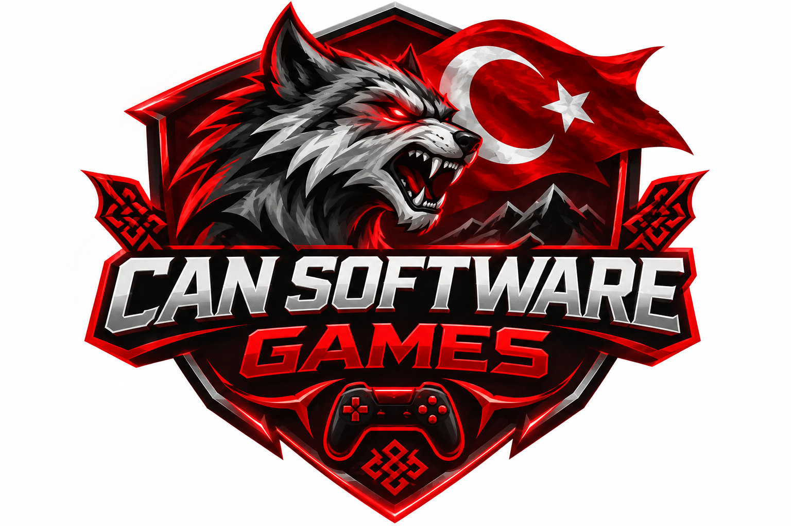
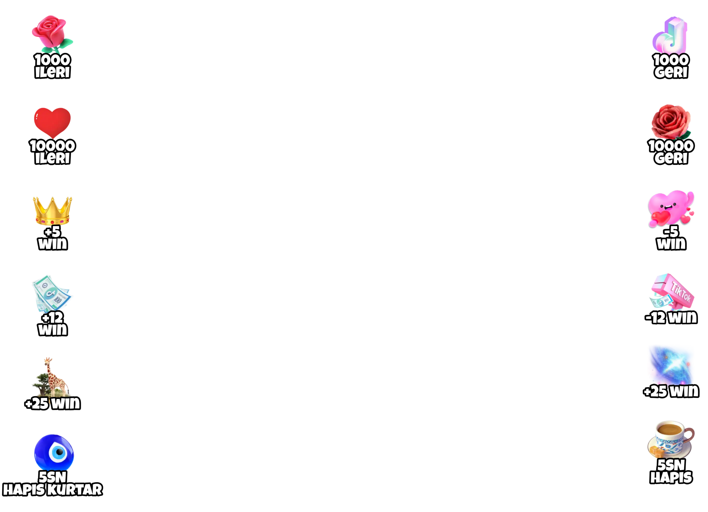

OUR MISSION
Misyonumuz
Yenilikçi, güvenilir ve kullanıcı odaklı teknolojiler geliştirerek dijital dünyanın ihtiyaçlarına özgün çözümler sunmak.
2019 yılında Bulgaristan'da başlayan teknoloji yolculuğumuz, bugün CAN SOFTWARE markasıyla Türkiye'den dünyaya uzanıyor. İnteraktif oyunlar, yapay zekâ sistemleri, canlı yayın teknolojileri ve yeni nesil yazılım çözümleri geliştiriyoruz.
.png)
CAN SOFTWARE'in temelleri, kurucumuz Ahmet Utku Can'ın 2019 yılında Bulgaristan'da başladığı yazılım ve teknoloji çalışmalarıyla atılmıştır.
Bulgaristan'da başlayan bu yolculuk, yıllar içerisinde gelişen teknik bilgi birikimi, deneyim ve yenilikçi vizyonla bugünkü CAN SOFTWARE markasına dönüşmüştür.
Teknolojiyi yalnızca bir araç olarak değil, geleceği şekillendiren güçlü bir değer olarak görüyoruz. Özgün fikirleri yenilikçi dijital projelere dönüştürmek için çalışıyoruz.
Günümüzde interaktif oyunlar, yapay zekâ sistemleri, masaüstü uygulamaları, web teknolojileri ve canlı yayın çözümleri üzerine çalışmalar yürütüyoruz.
Türkiye'nin teknoloji alanındaki gücünü uluslararası platformlara taşımayı, özgün yazılımlar geliştirmeyi ve dijital dünyada kalıcı bir marka olmayı hedefliyoruz.
Yenilikçi, güvenilir ve kullanıcı odaklı teknolojiler geliştirerek dijital dünyanın ihtiyaçlarına özgün çözümler sunmak.
Türkiye'den dünyaya ulaşan, uluslararası ölçekte tanınan, yazılım, yapay zekâ ve interaktif oyun teknolojileri alanında güçlü ve yenilikçi bir marka olmak.
CAN SOFTWARE — GELECEĞİ KODLUYORUZ.
Dijital dünyanın farklı alanlarına yönelik yenilikçi çözümler.
Canlı yayın izleyicilerinin oyun deneyimine doğrudan katılmasını sağlayan sistemler.
Modern web uygulamaları, masaüstü yazılımları ve kullanıcı odaklı dijital çözümler.
Akıllı asistanlar, araştırma, dosya analizi ve görsel üretim teknolojileri.
TikTok LIVE yayınlarına özel interaktif oyun sistemleri geliştiriyoruz. İzleyicileriniz hediyeleri, beğenileri ve takipleriyle oyun deneyiminin bir parçası olsun.

Hediyelerle oyun mekaniklerini gerçek zamanlı olarak etkileyin.
Kazanma hedefleri, özel sayaçlar ve dinamik oyun mekanikleri.
Yayın konseptinize uygun özelleştirilebilir interaktif oyun çözümleri.
TikTok LIVE yayınları için geliştirilen 3D interaktif koşu oyunu. İzleyicilerin hediyeleriyle mesafeyi değiştir, WIN kazan ve demir kafesten kurtul. Her yayıncı kendi TikTok kullanıcı adıyla bağlanabilir.
Windows kurulum dosyası • v2.0.0 • 126.8 MiB
Hedefe ulaş, geri sayımı tamamla ve WIN kazan!

Akıllı sohbet, araştırma, dosya analizi ve görsel üretim özellikleri üzerine geliştirilen yapay zekâ platformumuz.
Platformu Keşfet ↗TikTok yayıncılarına özel hediye etkileşimi, yorum seslendirme, widget sistemleri ve oyun entegrasyonları üzerine geliştirilen masaüstü yazılımı.
Geliştirme Süreci →Geliştirme alanlarımız ve geleceğe yönelik proje hedeflerimiz.
Yeni oyun konseptleri, hediye etkileşimleri ve canlı yayın mekanikleri.
Yayın yönetimi, widget sistemleri ve yayıncı araçları.
Yapay zekâ altyapıları, yeni özellikler ve performans çalışmaları.
Masaüstü ve web tabanlı yeni dijital ürünler.
CAN SOFTWARE markasının kurucusu ve geliştiricisidir. 2019 yılında Bulgaristan'da başladığı yazılım ve teknoloji yolculuğunu, bugün CAN SOFTWARE çatısı altında sürdürmektedir.
İnteraktif oyunlar, yapay zekâ, yazılım geliştirme ve canlı yayın teknolojileri üzerine çalışmalar yürütmekte; özgün projelerle Türkiye'den uluslararası pazarlara ulaşmayı hedeflemektedir.

Bizi takip edin.
Yeni projeler, oyun tanıtımları, satın alma ve iş birlikleri için hesaplarımız.
E-posta
ahmet.utku.can1@gmail.com
E-posta Gönder ↗Instagram
@can.software1
Profili Ziyaret Et ↗TikTok
@can.software1
Profili Ziyaret Et ↗